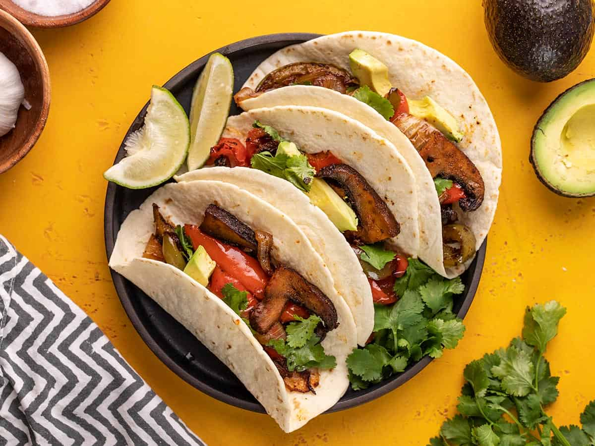

Fajitas

Description
Indulge in the irresistible flavors of our fajita recipe! This Tex-Mex classic
features tender strips of marinated chicken or beef, paired with vibrant bell
peppers and onions, all seasoned to perfection. Whether wrapped in warm tortillas
or served with accompaniments, these fajitas promise to elevate any meal with their
tantalizing taste. Get ready to embark on a culinary journey that celebrates the essence
of Mexican cuisine!
Ingrediants
- 1/4 cup + 1/2 tsp Lime Juice, divided
- 3 Tbsp Olive Oil, divided
- 4 cloves Garlic, crushed
- 3 tsp Soy Sauce, divided
- 1 tsp Salt
- 1/2 tsp Liquid Smoke
- 1/2 tsp Cayenne Pepper
- 1/4 tsp Black Pepper
- 1 lb Chicken Breasts or Skirt Steak, bones/skin removed
- 2 Tbsp Water
- 1 large Spanish Onion, thinly sliced
- 1/2 each Green, Red, and Yellow Bell Pepper, thinly sliced
Steps
-
Combine 1/4 cup lime juice, 2 Tbsp of the oil, garlic, 2 tsp soy sauce, the salt, liquid smoke, cayenne pepper,
and black pepper in a resealable container, add chicken/steak, cover, and refrigerate for at least 2 hours or overnight.
- Combine water, remaining soy sauce and lime juice, and a dash of salt and pepper - set aside.
- Grill meat over a medium-high flame for 4-5 minutes per side, or until cooked through.
- Cut meat into thin strips - set aside and keep warm.
-
In a large skillet over medium-high heat, cook onion and peppers in remaining oil until brown - remove from heat and pour
reserved liquid mixture over onions and peppers.
- Toss together meat, onions, and peppers.
- Can serve with warm tortillas, pico de gallo, cheese, sour cream, and guacamole.